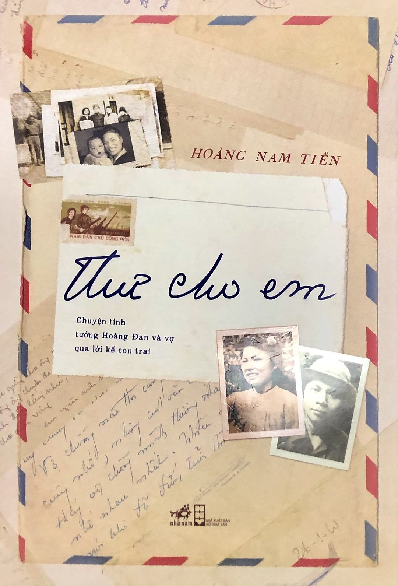

I am Cuong, a young boy with the ambition to change the world, master technology, and improve everyone's life. My hobby is drinking coffee, which also happens to be the symbol of Java. Additionally, I also enjoy reading books, exploring new things, and fishing while chilling during the sunset.
Here are a few cool things about me
Full name: Tran Trieu Cuong
Date of birth: October 14, 2004
Height: 1.68m
Weight: 68kg
Hobbies: drinking coffee, reading books, fishing
Personality: friendly, energetic, and creative
Project Tool: Trello, Jira
Certificate:
- Completed Basic Testing course
- Completed Business Analyst course
- Completed Java Spring Boot Fullstack course
System Design: Draw.io
Program Languages: Basic of: C, Java Core,
Good at Spring Boot, SQL Server, and MySQL
2022: Tester at ITMAX
2023-2024: Java Spring Boot Full Stack Developer at Techmaster
2024: Completed Business Analyst course at IBPO Center
Here are a few cool things about me
- Completed Business Analyst course with a project on online ticket sales survey for Hoguomplara
You can find more details in the project folder: Project Folder on Google Drive
Starting with the DJI Mavic Pro, my great passion, I partnered in business and gradually developed to the DJI Air 2, DJI Mini 3 Pro, DJI Air 2S, DJI Mini 4, DJI Air 3, and finally the DJI Air 3S.

- To pursue my passion
Java (Spring Boot) real-world project for a DJI drone store:
- Timeline: 8/2024 - now
- Working with customer to get requirements
- Analyze requirements and make a solution proposal to customer
- System design (User interface, working flow, database, etc.)
- Developing using Java Spring Boot, security, AI, MySQL, etc.
Link:
Google Docs Spreadsheet
GitHub:
SD_94vs1 GitHub Repository

"Letters to You" - A love story that spans two centuries of Major General Hoàng Đan.
The love, longing, and desire for reunion between Major General Hoàng Đan and his wife during the war are conveyed through more than 400 letters.
The love story of Major General Hoàng Đan and Mrs. Nguyễn Thị An Vinh is retold by their youngest son, businessman Hoàng Nam Tiến, in the book *Letters to You*. The book is divided into four parts: "Going to Điện Biên Phủ, then we marry!"; "Fragrance that brings memories"; "Letters to You, even amidst the enemy's and our own gunfire"; "Come back and be together", corresponding to the timeline from the union of the couple, to the days of separation due to the war, and finally their old age together.
In progress